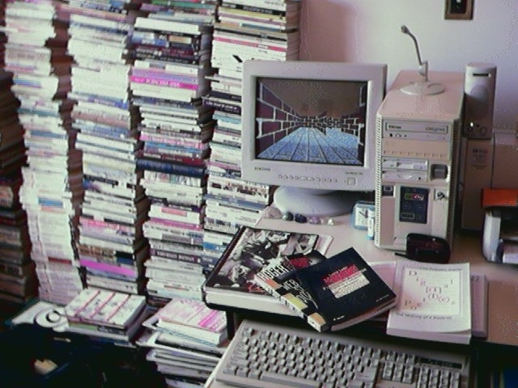

Project,
Photos, Text
Jorge Luiz Antonio
Web design, Sound Project
Guilherme Ranoya
English edition of
Mário de Andrade's poem
translation
Chris Daniels (USA)
Itu, São Paulo, Brazil, 2002/2003
Works cited
ANDRADE, Mário de (s.d.). Garoa do meu São Paulo. In:
___. De Paulicéia Desvairada a Café: poesias completas. SP, Círculo do
Livro, p.288.
BLAKE, William. London. In: GOWER, Roger (1996). Past
into present. England, Longman,p.126-7.
BLAKE, William. Londres. In: MCLUHAN, Marshall e PARKER,
Harley (1975). O espaço na poesia e na pintura através do ponto de fuga.
Trad. Edson Bini, Márcio Pugliesi e Norberto de Paula Lima. SP, Hemus, p.128.
LEÃO, Lucia (2002). Plural maps: lost in São Paulo.
Disponível em: http://www.lucialeao.pro.br/pluralmaps/.